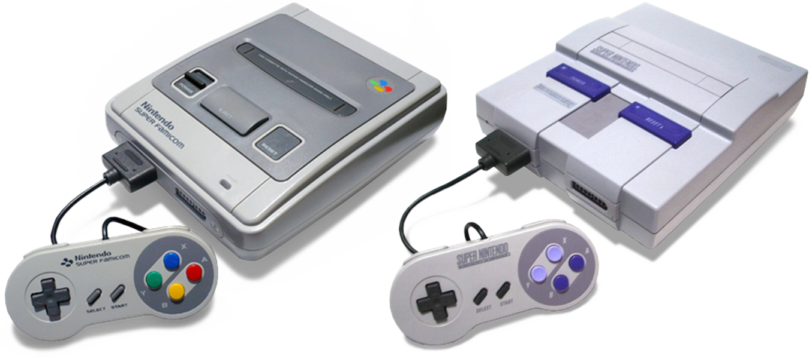
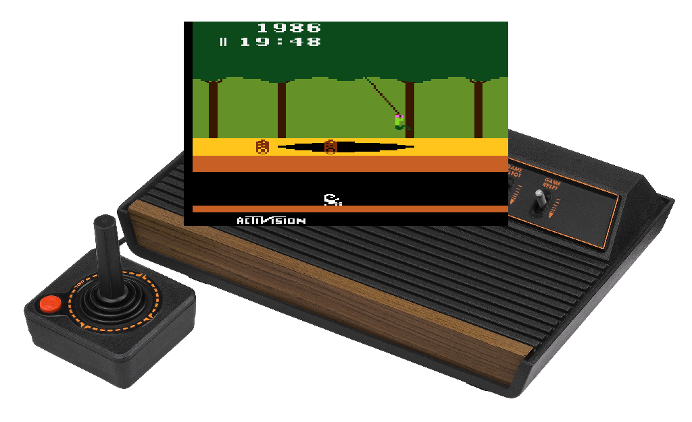
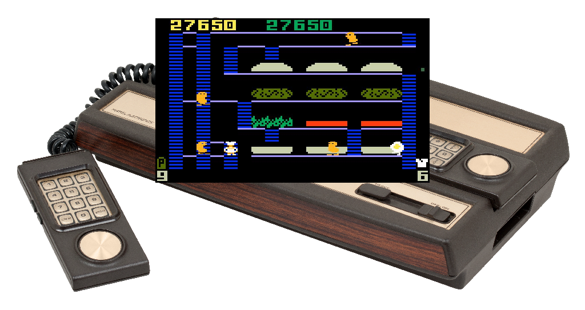
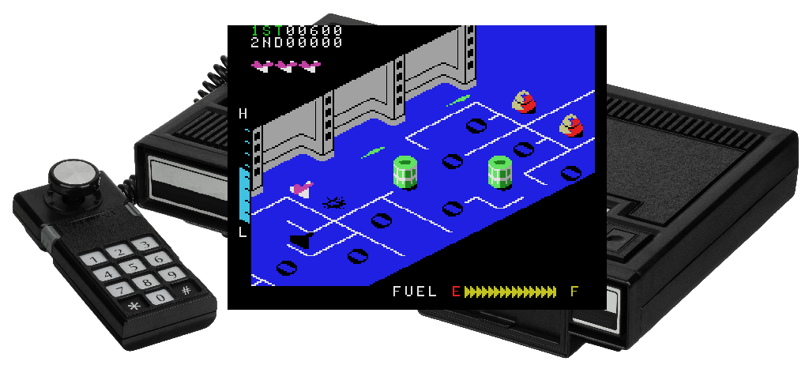
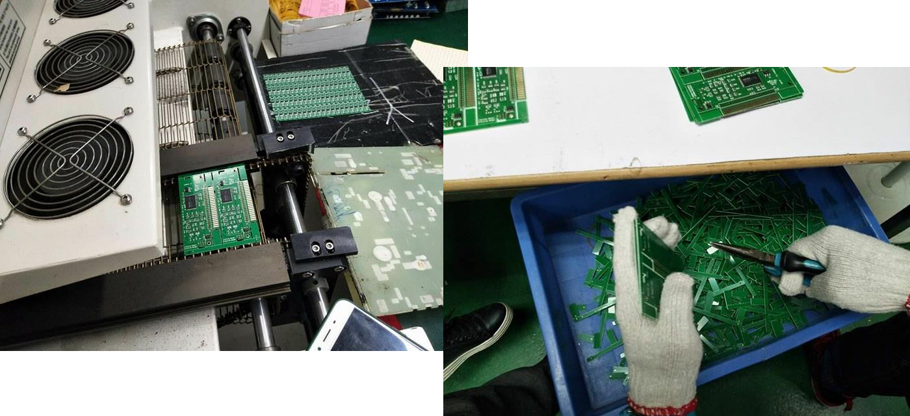
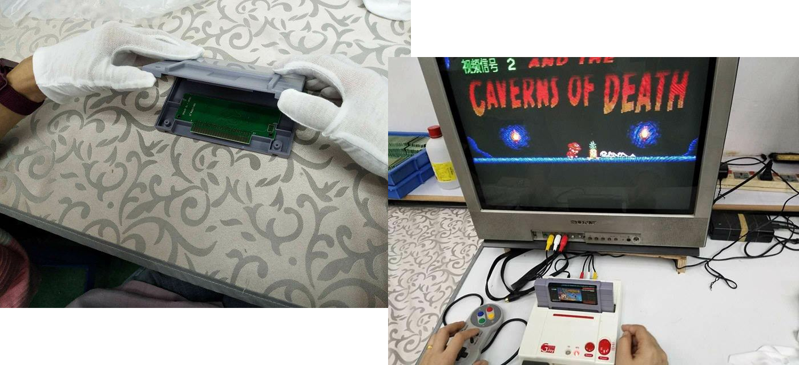
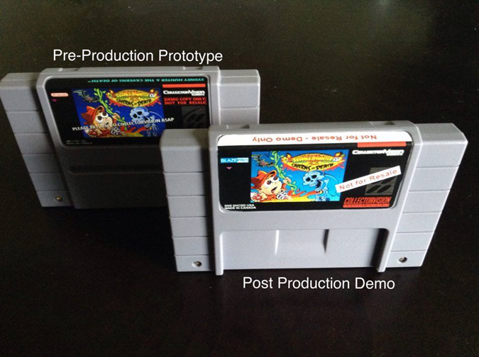
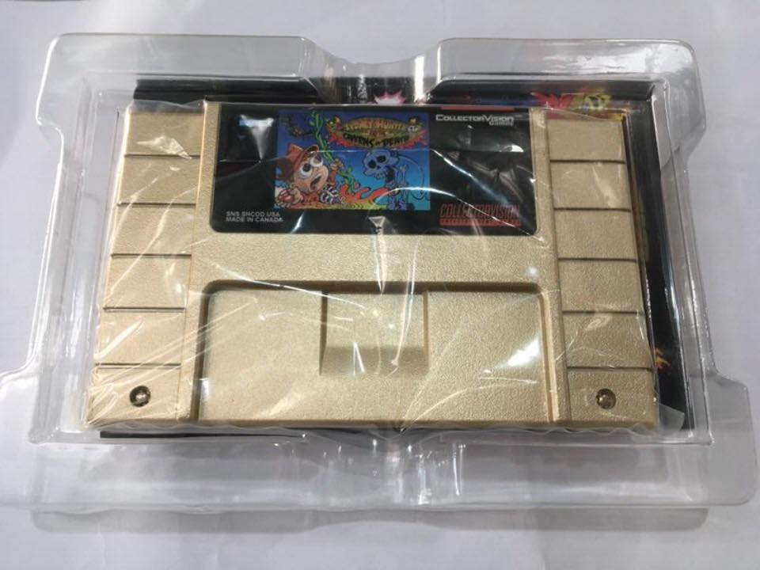
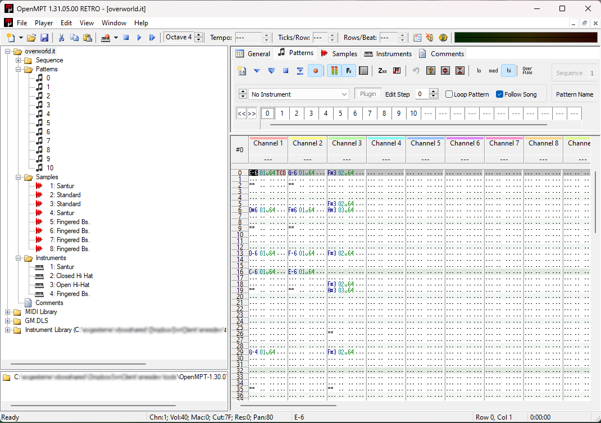

Du rêve à la réalité
Développer un jeu

Je vouspropose de vous plonger dans un rêve par rapport à ma passion, le développement de jeux sur console ancienne.
Comme quoi, il faut toujours croire à ses rêves, ce talk va vous le prouver.
Jean-Michel Girard / Alekmaul
DTL le jour chez Worldline, développeur sur anciennes consoles la nuit.
**Au commencement
*Imaginez le jeu vidéo au début des années 80
Dans les années 70-80, les jeux vidéo sur des consoles se jouaient sur la télé du salon.
Ma passion du jeu vidéo date de là, j’avais un peu plus de 10 ans à l’époque des premières consoles.
Quelqu'un connait ce film ?
**Ready Player One
*Trouvez toutes les références
revoir certaines consoles, de regarder le film “Ready Player One”,
un hommage, à près de 50 années de jeux vidéo.
**Les années Hebdogiciel
*Une bonne façon d’apprendre à coder sur micro-ordinateurs
Années Lycée, débuté sa parution en 1983
concours dit “les deuxligneurs”
Le dernier numéro est paru le 2 Janvier 1987, sans crier gare -> partis chez Joystick
Quelle est cette console de jeux ?
Release date : 1977 (1982)
D'ailleurs, petit jeu jeu, devinez le nom de ces consoles
Release date : 1977 (1982)

Atari 2600
Release date : 1979 (1982)
Release date : 1979 (1982)

Intellivision
Release date : 1982 (1983)
Release date : 1982 (1983)

Colecovision
Release date : 1990 (1992)
Super Nintendo
La dernière , la plus simple, qui va nous servir de base dans ce talk.
Pas d'image car nous allons réaliser notre rève avec.
**Le développement Homebrew
Toutes les consoles, nouveaux jeux développés maintenant par des amateurs.
que l'on nomme le développement homebrew
Que dit Wikipedia ?
[...] « Homebrew » [...] jeux vidéo produits [...] sur des plateformes de jeux propriétaires, pas typiquement programmables par des utilisateurs, ou utilisant du matériel propriétaire pour le stockage des jeux (cartouche) [...] »
**La notion de Homebrew
Le terme Homebrew arrive dans les années 2000
Permettant de mettre un mot sur ces développements amateurs.
Voici la définition du site Wikipedia,
Anglicisme Homebrew signifie à la base « brassé à la maison » en traduction littérale ou produit du terroir,
Assez éloigné du concept de développement,
Assez proche tout de même dans l’esprit que ce n’est pas un réel éditeur de jeu comme UbiSoft, Virgin Games ou Capcom qui réalisent le jeu.
**Et la legislation dans tout ça ?
Réponse longue
Contournement des systèmes de sécurité
Reprise de code propriétaire
Plus d'exploitation commerciale
Pas de kit de développement officiel
Ne pas refaire Mario ou Zelda
1) Contournement des systèmes de sécurité permettant théoriquement d’empêcher un jeu sans licence de démarrer.
2) Pas de protection sur la console, de kits de développement sans reprise de code propriétaire.
3) Pas d’utilisation de licences de jeux actuels (graphismes, musiques, noms).
https://forums.nesdev.org/viewtopic.php?t=17447
**Comment créer un jeu
*Avec un kit de développement (SDK)
On développe des Homebrew le plus souvent du temps avec des kits de développement.
Il y en a 2 types :
Officiel : Utilisable mais pas recommandé à cause des droits d’auteur encore en vigueur des sociétés ayant éditées les consoles.
Amateur : Fortement recommandé, car permet de se familiariser rapidement avec les spécificités de la console, de l’ordinateur utilisé (2012).
Kit officiel en photo. Il a été conçu par Intelligent Systems et vendu uniquement aux studios de développement sous licence Nintendo (très cher la licence …).
https://en.wikipedia.org/wiki/Super_NES_Emulator_SE
https://blog.wolffmyren.com/2008/07/28/super-nintendo-emulator-se/
**Au travers d'émulateurs sous Windows, Linux, Mac-OS
Si on continue à explorer le développement, il va falloir tester notre jeu.
Le moyen le plus simple pour tester son jeu Homebrew est d’utiliser un émulateur, surtout qu’il devient couteux d’obtenir une console SNES maintenant.
**Avec une cartouche Flash sur une vrai console
Emulateurs font pas tout.
Powerpack SNES : https://www.retrousb.com/product_info.php?cPath=24&products_id=84
SD2SNES Pro : https://krikzz.com/store/home/54-sd2snes-pro.html
Parler du Cartmodding ou de la fabrication
**Avoir une console switchless
Parler du Cartmodding ou de la fabrication
NTSC - PAL et donc mod console.
http://www.ffviman.fr/switch-snes/presentation-historique-switchless.html pour le switch de la SNES.
Que c'est mon jeu Super Nintendo que j'ai fais
Parlons maintenant du jeu dans sa version Super Nintendo.
Ce jeu repose sur le principe d’exploration de tableaux, pour récupérer des objets et les utiliser pour progresser dans l’aventure.
Vous incarnez donc un explorateur, nommé Sydney Hunter, qui se trouve piégé dans une montagne…
Armé uniquement de son fidèle boomerang, Sydney doit naviguer dans des cavernes sombres tout en évitant les chauves-souris, les fantômes, la lave brûlante et beaucoup d’autres obstacles et ennemis. Il doit traverser 10 cavernes différentes avant de pouvoir retrouver sa liberté.
Au fur et à mesure de sa progression, les cavernes deviennent de plus en plus grandes et donc son exploration de plus en plus complexe.
2014
**Début de l'aventure
Laissez moi vous présenter mes amis Canadiens et Américains : Jean-François, Toby (tous deux canadiens) et John un Américain. Ils sont tous trois éditeur de jeux amateurs au travers de la société CollectorVision.
Le 15 juin 2014, je reçois un mail de Jean-François Dupuis (à gauche sur la photo) m’indiquant qu’il voulait commercialiser un de mes jeux sur SNES mais surtout qu’il recherchait un développeur pour un jeu original dont il possédait les droits et tous les graphismes, nommé « Sydney Hunter and the Caverns of Death ».
Sydney Hunter and the Caverns of Death est à la base un jeu Flash créé il y a quelques années par Keith Erickson de Studio Piña. Ce dernier est surtout un artiste ayant participé à la creation des graphismes pour plus de 40 jeux commercialisés par des studios de jeux professionnels.
Mon expérience de la programmation sur Super Nintendo datant à ce moment là de 2 années, je me dis que cela vaut le coup de tenter l’aventure.
La longue ascension du Kilimandjaro …
Les développements ont donc débuté en 2014, en utilisant mon kit de développement PVSneslib que je vais détailler ensuite.
J’ai créé rapidement la première caverne, qui était assez simple.
Certains passages, comme ceux avec de la lave, ont demandé une certaine gymnastique d’espris pour avoir quelque chose de sympatique à l’écran, et j’y suis arrivé.
J’ai donc attaqué les autres cavernes mais je me suis aperçu que cela ne serait pas assez rapide en terme de jouabilité car le jeu était programmé en langage C.
En effet, certaines carvernes étaient assez complexes, avec des niveaux qui bougaient verticalement (on appelle cela du scrolling dans le jargon des développeurs).
J’ai ainsi du refaire le jeu plusieurs fois, en repartant de zéro, car ma copie me plaisait pas.
J’ai aussi refais tous les niveaux avec un outil nommé Tiled, présenté sur ce slide, afin de me permettre une meilleur gestion des ennemis sur chaque écran, que je réinjecte facilement ensuite dans le code du jeu.
A certains moments, j’étais démotivé, me disant que je n’y arriverai pas, je faisais des pause de plusieurs semaines. Mais j’ai continué, essayant à chaque fois de trouver la bonne technique.
J’ai laissé de côté le langage C pour refaire certaines parties, comme la gestion de l’affichage des niveaux, dans un langage plus proche de la Super Nintendo, nommé le langage assembleur. Cela a été payant, le jeu fonctionnait maintenant bien.
Les développements se sont donc passés de 2014 à fin 2017, plus de 3 ans de travail, à refaire et refaire le jeu mais aussi à apporter certaines demandes de modifications de la part de mes amis Canadiens et Américain, comme une énorme scène d’introduction animée, présentant l’introduction du jeu, qui lui donne un aspect assez professionnel, comme les jeux de l’époque. Vous voyez 4 écrans de cette scène d’introduction sur la droite de ce slide.
La Chine et le marché de masse

Collectorvision ne possède pas, aux USA ou au Canada de moyens pour fabriquer des jeux sur Super Nintendo. Il a donc fallu trouver un partenaire ayant la capacité de le faire, c’est ce qui a été fait avec JoshProd, qui possède des chaines de fabrication en chine.
C’est donc en chine que le jeu a été fabriqué à environ 1000 exemplaires mais aussi testé comme vous pouvez le voir sur ce slide en haut à droite.

Il va de soit que l’on a pas le droit à l’erreur avec ce genre de console, car le jeu (que l’on nomme ROM dans ce cas) est inscrit dans la cartouche et ne peut donc pas être mis à jour si des bugs sont trouvés, les jeux de maintenant n’ont pas ce problème grâce à Internet la la connectivité des consoles.
On a eu hélas trouvé un bug après la fabrication, mais bon, cela fait du jeu un collector ;)
KickStater, IndieGogo
**Financement du jeu Homebrew
*Participatif ou par des précommandes
*Edition physique (manuel, boites, cartouches)
1) Participatif, via des sites comme KickStarter, indiegogo.
2) Par des précommandes, sur des forums, où la console est bien représentée.
Afin de pouvoir produire le jeu en édition physique (c’est à dire avec boitier, manuel, cartouche), nous devons passer par un financement participatif car tout cela a un coup que ne pouvait pas supporter àl ‘époque la société CollectorVision. Le financement avait été estimé à 10 000$ pour essayer de produire un certain nombre de cartouches. Il a été plus que dépassé pour atteindre près de 40 000$.
Le seul soucis pour moi, par rapport à ce financement participatif, c’est que l’on met des paliers d’achévement pour le financement afin d’inciter les gens à participer.
A chaque palier atteint, on ajoute des récompenses. On ne pense bien entendu pas que tous les paliers seront atteints, mais pour notre jeu, cela a été le cas !
C’est pour cela que je me suis retrouvé à devoir ajouter 2 cavernes supplémentaires au jeu avec des monstres différents à devoir gérer. Pour quelqu’un qui a en plus un travail chez Worldline, les soirées et les Week End allaient être bien occupés par ce projet…

**Version demo pour la presse et voir l'accueil
**Version demo pour la presse et voir l'accueil
2017
**La livraison a débuté et la fin d'une belle aventure
La livraison a été faite au Canada, avec les différentes versions prévues lors du KickStarter

Dont la version “imitation OR” de la cartouche.
Réalisez votre rêve
Développez un jeu sur Super Nintendo avec PVSneslib !
Nous allons regarder comment réaliser l'équivalent de ce peit jeu sur SNES avec le Kit que j'ai développé, PVSneslib
Un peu de Hard...ware...
Différents types de mémoire
Sortie son, la cartouche, la mémoire vidéo et la mémoire sonore
Un peu de graphismes
Différentes couches de fond
Les objets nommés sprites
Les couleurs par des palttes de 16 couleurs
PVSneslib : créé pour les 20 ans de la SNES
https://github.com/alekmaul/pvsneslib
**Plus de 10 ans de mises à jour
Pour les 20 ans, en 2012
Contact ami.
Histo SNES : Novembre 1990 au Japon sous Super Famicom.
Super Nintendo ou SNES aux USAen 1991 et enfin en EUR avec le même nom qu’au USA en 1992.
Plus de 49 millions d’unités ont été vendues dans le monde,
Licenses connues
Mise en place d’un kit de développement sur SNES, permettant aux personnes intéressées de pouvoir développer sur cette console. Ce kit permet de simplifier la programmation sur cette console,
site Ultimate Console le 12 Avril 2012.
Basé sur les travaux d'Ulrich Hecht qui avait débuté un autre kit nommé SnesSDK.
PVSnesLib est en assembleur avec des primitives pour le langage C
Confinement, création du discord
Au fil du temps, ce kit a bien évolué . J’ai amélioré sa structure, ajouter beaucoup de fonctionnalités pour permettre une utilisation plus facile du kit, de certaines manettes aussi comme le multitap permettant de jouer à plus de 2 personnes sur Super Nintendo. J’ai aussi ajouté des exemples.
Pas mal de développeurs dans le monde utilisent maintenant ce kit de développement, ce qui me rend un peu fier de voir que mon rêve de commercialiser un jeu sur SNES est aussi le rêve d’autre personnes.
Du simple fichier ZIP du site UltimateConsole, le kit a maintenant son propre github avec une CI/CD pour la création des snapshots et de la doc.
But du SDK PVSneslib
Fonctions génériques et simples pour gérer
Les graphiques (fonds & objets animés)
Le son
La manette
Langage C utilisé pour développer les jeux
Des outils pour convertir les graphiques et les sons
Il est basé sur les travaux de Ulrich Hecht avec SNES Sdk
Il fournis des fonctions génériques pour l’affichage et la gestion des différents BGs et des sprites, du son et des manettes de la SNES,
Il permet d’utilizer le langage C pour developer ses jeux
Et enfin, tout le monde peut contribuer à son évolution car il est disponible sous GitHub.
Le kit est entièrement développé en assembleur avec des wrapper pour permettre son utilisation en C.
Fonctionnement
Création de la cartouche (fichier SFC) pour la SNES
Rentrons plus dans le détail de foncitonnement du kit,
Tout d’abord, on a les fichiers sources de notre jeu, qui peuvent être en C ou assembleur. On a aussi les fichiers ressources que j’expliquerais ensuite.
Les fichiers sont compilés avec une version patchée de tcc (Tiny C Complier, un compilateur libre de droits), nommé 816-tcc. J’ai aussi réalisé des outils pour modifier les variables de type constantes ou optimisé le code généré par 816-tcc car ce dernier ne génère pas un code très propre.
Les différents assets de notre jeu (son, sprites, écrans fixes ou map du jeu) sont convertis dans un format lisible par la SNES avec des outils que j’ai développé comme gfx2snes pour les graphiques ou smconv pour le son.
Tout cela produit des fichiers objets qui sont ensuite liés les uns aux autres au bon endroit par l’outil wla-link. Ce dernier va produire le fichier rom, avec l’extension sfc qui sera utilizable sur carte flash ou sur émulateur..
Les graphiques - Tiled
On utilise l'outil Tiled pour créer les niveaux, avec un export au format JSON.
Le son - Modplug Tracker

Concernant le son, on définie la musique avec un outil de type tracker, comme ModPlug Tracker : https://www.modplug.com/#/
Pseudo-code du jeu
Initialisation de la console
Du module sonore
Du module graphique
Mise en place des graphiques (backgrounds et sprites)
Voici le pseudo code general du jeu mario développé avec mon kit PVSneslib.
Boucle principale
Gestion des touches
Déplacement du personnage et de la carte du niveau
Attente de la fin d’affichage de l’écran (VBL)
Le code source est disponible sur le github de la lib, avec beaucoup d’autres exemples, permettant ainsi à ceux qui veulent essayer le kit , d’avoir de quoi progresser rapidement.
La toile et ses excés
**Quand certains essayent d’en profiter …
Bien entendu, le jeu s’est retrouvé, comme beaucoup d’autres jeux, en vente sur eBay, à un prix bien supérieur au prix d’achat. Même si cette version “Gold cart” était effectivement une version rare du jeu, à 150$, de là à essayer de le vendre 300$ ...
La boucle est bouclée
**Le plaisir de se faire pirater !
Afin d’avoir mon rève réalisé jusqu’au bout, et bien, j’ai eu le droit à voir mon jeu piraté et en vente sur Ali Express (il y est encore de nos jours).
Ni une, ni deux, j’ai donc acheté cette version pirate, elle n’a bien entendu rien à voir par rapport à l’original (elle ne possède pas de boite, ni de manuel et la cartouche est de piètre qualité) mais la boucle est bouclée, on ne peut pas espérer mieux pour un développeur amateur.
**Mais aussi de se faire spammer !
AliExpress m’a même envoyé un mail lors du Black Friday pour que j’achète mon jeu en version piraté !
On ne peut hélas arréter difficilement ce genre de vente sur ces sites chinois, mais ça m’a bien fait rire de recevoir ce mail.
MERCI !
alekmaul@portabledev.com